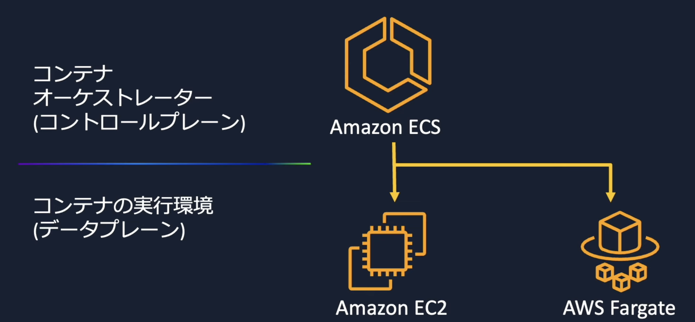
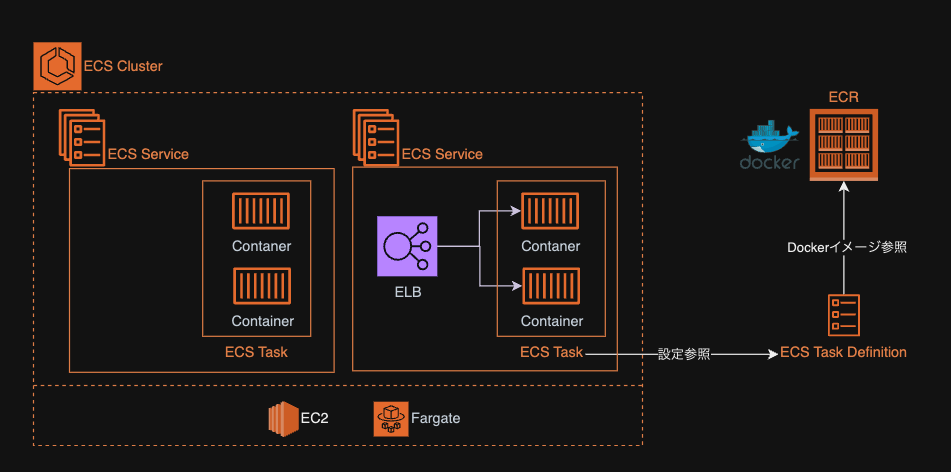

ECS¶
ECSとは、AWSが提供するコンテナのフルマネージドなオーケストレーションサービス。 ECSを利用することで簡単に、以下のオーケストレーション操作を行うことができる
コンテナのデプロイ
ポート管理
スケーリング
ヘルスチェックや自動復旧
また、AWSサービスであるため他のサービスとも統合されており、ログ・メトリクス・パイプラインなどとの統合およびミドルウェアをAWS側でメンテナンスされるというメリットがある。
コンテナオーケストレーションとは¶
実行するコンテナの増加やスケーリング設定の必要性に伴って、コンテナの設定や管理は煩雑かつ膨大になる。 結果として、コンテナの実行や設定管理などを集中的に行うコンテナオーケストレーションが必要になっている。
コントロールプレーンとデータプレーン¶
オーケストレーションでは、コンテナを集中管理するコントロールプレーンと、実際のコンテナの動作環境のデータプレーンがある。
ECSのサービス自体は、コントロールプレーンに該当し、データプレーンにはEC2とFargateを選択することができる。
 Amazon ECS 入門【AWS Black Belt】
EC2のデータプレーン¶
EC2をデータプレーンとすると、クラスターと呼ばれるEC2群を設定し、そこにコンテナを分散配置することになる。 EC2のサーバー設定を行い、ecs用のエージェントやDockerEngineなどの設定を行い管理する必要がある。
Fargateのデータプレーン¶
Fargateをデータプレーンとすると、抽象化されたマネージドなFargateの上にコンテナを配置することが可能となる。 サーバーの設定や管理が不要な分スムーズな利用が可能だが、サーバーに対する操作はできないため、柔軟性は落ちる。また、従量課金性ため利用用途に応じた費用算出が必要。
ECSの構成要素¶
ECSにおいて重要な構成要素は以下の5つ
要素 |
概要 |
|---|---|
ECR |
Dockerコンテナイメージの保存と管理を行うサービス。 |
タスク定義 |
実行するDockerコンテナの設計書。使用イメージ、リソース定義、ネットワークなどを定義。 |
タスク |
タスク定義に基づいて起動される、実際に稼働するコンテナインスタンス。 |
サービス |
タスク定義に基づいて、タスクを実行するように管理するためのリソース。他サービスとの連携なども定義 |
クラスター |
複数のタスクやサービスを管理する論理的なグループ。 |

ECR¶
AWSが提供する、コンテナイメージのリポジトリサービス。 AWSでは、ECRでリポジトリを管理することで、ECSと連携し簡単にコンテナイメージの指定をすることができる。
タスク定義¶
タスクを構成するコンテナ群の定義を行うサービスであり、タスクの設計書。 以下の要素などをJSONで指定する。
要素 |
概要 |
|---|---|
コンテナ定義 |
イメージの指定 |
リソース |
利用するCPUやメモリ |
認可 |
タスクに割り当てるTaskRole |
環境変数/シークレット |
タスク実行時に渡す環境変数値や機密情報 |
ポート設定 |
タスク実行時に利用するポート番号 |
上記の設定を更新すると新しいタスク定義のバージョンが発行され、それをリビジョンと呼ぶ。
ネットワークモード¶
ECSで利用するネットワークモードにはいくつかのパターンがある。
タスク¶
タスク定義に基づいて、起動されるコンテナ群をタスクと呼ぶ。 たとえば、タスク定義で業務的なコンテナとログ出力用のfluentbitのコンテナの定義を記述し、タスクとして起動させることで、タスクの中で2つのコンテナが起動する。
サービス¶
タスクの実行数を定義し、サービスはその起動数を守るために自動的に起動制御を行う。 たとえば、不測の事態でタスクが停止してしまった場合は、新たなタスクを起動しようとする。 オートスケーリングの設定についてもサービスで行う。
また、別サービスとの連携を管理するのもサービスであり、ELBと連携する定義を行うことができる。
タスクをサービスを経由せずに起動させる方法もあり、それはスタンドアロンタスクと呼ばれ、サービスのようにタスク維持をするのではなく、処理実行などに利用できる。
クラスター¶
実行環境の境界であり、データプレーンの指定(EC2/Fargate)を行うのもクラスター単位になる。
ECSのRole¶
ECSではタスクロール(taskRole)とタスク実行ロール(executionRole)という2つのRoleを指定する。
タスクロールは、タスクのアプリケーションが利用するロールでありtaskで実行されるコンテナの処理に応じて連携が必要なサービスなどに対するRoleを付与する必要がある。
一方で、タスク実行ロールはEKS コンテナエージェントが利用するロールである。
すなわち、コンテナイメージのPullやCloudWatchLogsへの書き込みは実行ロールが行なっているため、それらの権限を付与する必要がある。
ECSとELBの連携時のポートセッティング¶
ELBとECSを連携し、リクエストに対して負荷分散を行うのはベストプラクティスなアーキテクチャになる。 この設定について、ポイントを整理する。
設定サービス¶
設定を行う必要があるサービスは以下
サービス |
設定内容 |
|---|---|
ALB |
クライアントからのリクエストをTarget Groupにルーティング。 |
Target Group (TG) |
ECSサービスへのルーティング先として登録。 |
サービス |
ALBと連携し、ECSタスクへのルーティングルールを設定。 |
タスク定義 |
ホストとコンテナのポートマッピングを定義し、ルーティング先を指定。 |
具体的には以下の設定を行う。
サービス |
通信内容 |
送信者と送信ポート |
受信者と受信ポート |
|---|---|---|---|
ALB |
クライアントからHTTP/HTTPS通信を受信。リクエストのパスやホスト名から、適切なTarget Group (TG)へルーティング。 |
クライアント：443/80 |
ALB：443/80 |
Target Group (TG) |
ALBからルーティングされた通信を受信し、ターゲット（ECSタスク）へ転送。 |
ALB：ポート(設定による) |
ホスト：ホストポート(動的) |
サービス |
ALBと連携して、ターゲットグループ内のタスクをロードバランスし、タスクのホストポートへ通信を中継。 |
ALB：ポート(設定による) |
ホスト：ホストポート(動的) |
タスク定義 |
サービスからの通信を受信し、ホストポートとコンテナポートをマッピングしてコンテナに転送。 |
ホスト：ホストポート(動的) |
コンテナ：コンテナポート |